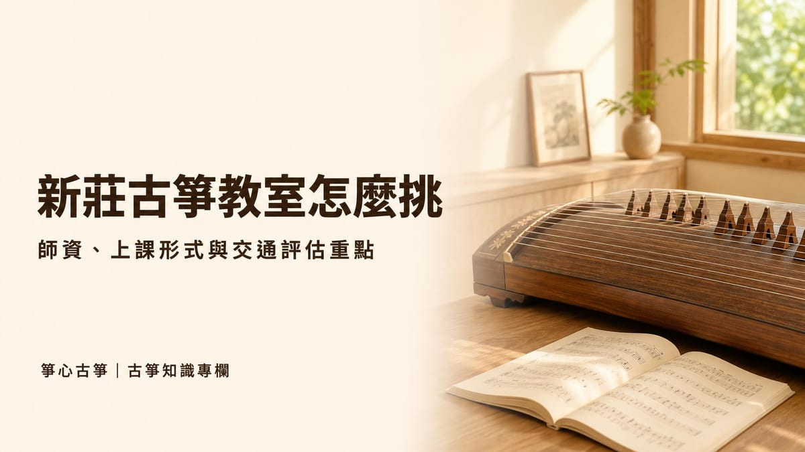

學習入門
古箏好學嗎？零基礎、自學與找老師的差別
古箏好學嗎？古箏以五聲音階定弦，入門比許多樂器容易，但要彈得好聽需要紮實的基本功。本篇整理初學最常卡關的地方、學到能彈一⋯

在新莊尋找古箏教室時，最重要的不是「哪一間最有名」，而是上課形式、師資背景、是否能先體驗，以及交通與上課時間是否配合得上你的生活作息。很多人一開始只比較學費高低，但學費相近的教室，實際上課品質可能差很多，值得多花一點時間比較幾間再決定。
以下整理幾個通用的挑選原則，不只適用於新莊，新北其他地區找古箏教室時也可以參考同樣的方式。
古箏和吉他等樂器一樣，指法與坐姿的細節很多，初期特別需要老師盯著糾正。以坊間音樂教室針對一對一與團體班的比較來看，兩種形式最大的差異在於「老師的注意力怎麼分配」：
| 比較項目 | 一對一 | 團體班 |
|---|---|---|
| 老師注意力 | 整堂課只看你一人，能立刻糾正手型 | 需分給全班，個人問題較容易被忽略 |
| 進度安排 | 可完全依個人程度調整 | 需配合班上多數同學的速度 |
| 費用 | 通常較高 | 通常較低，分攤到每人 |
| 適合對象 | 零基礎打底、有考級或明確目標 | 純興趣、想與同伴一起學 |
不少古箏教室（包含本教室）以一對一教學為主，原因是古箏的義甲配戴角度、坐姿與指法方向，很難在人數多的班級裡逐一糾正；打好基礎後，才比較適合再考慮團體或同儕形式的練習。
選老師時，坊間針對挑選音樂老師的建議大多提到幾個共通重點：是否具備科班背景（音樂系、國樂系或古箏演奏主修）、教學年資是否足夠，以及老師是否有能力依學生的程度與個性調整教法，而不是每個人都用同一套教材。
古箏教室還有一個容易被忽略的細節：教室裡的古箏數量與狀態。古箏體積大、不方便隨身攜帶，許多學生上課時會直接使用教室的琴，自己買琴通常是確定要長期學之後的事。上課前不妨留意教室的琴弦、琴碼、義甲是否維護良好，這會直接影響練習時的手感與音準判斷，相關保養細節可參考古箏保養與調音一文。
不管教室的資歷寫得多漂亮，坊間音樂教學的建議都指向同一件事：再漂亮的資歷，都不如一堂實際的試教。體驗課時，建議實際觀察幾件事：老師會不會先了解你的程度與目標再安排內容，而不是每個人都上同一套教材；彈錯的地方老師有沒有具體指出原因，而不是只說「多練習」；上完課之後，你自己是覺得「還想再來」還是「有點壓力」。
如果教室提供免費或平價的體驗課，也是一個訊號：代表教室對自己的教學品質有信心，不需要靠先收長期學費來綁住學生。想知道怎麼進一步評估老師本身，可以參考如何選擇適合的古箏老師。
古箏是需要長期累積的興趣，交通是否方便，會直接影響你能不能撐過前幾個月的撞牆期。挑選時可以考慮：
這些條件因人而異，沒有標準答案，但建議報名前就先問清楚，而不是上了幾堂課才發現通勤時間根本撐不下去。
報名前，建議先確認清楚費用怎麼算、要不要一次繳一整期、退費規定是什麼，不要因為「不好意思問」就直接刷卡。如果教室有提供書面合約，可以參考政府對短期補習班訂出的收退費原則作為判斷依據：依規定，學生在開課前申請退費，可退回已繳金額的九成；開課後但還沒上滿三分之一課程申請退費，可退回五成；已上滿三分之一以上課程，則不予退費。
就算你選的教室不是登記為短期補習班的形式，這個比例也可以當作評估「這份合約合不合理」的參考基準，遇到完全不能退費、或退費條件寫得很模糊的教室，建議多想一下再簽約。
整理以上幾點，挑選古箏教室時可以按照這個順序評估：先看上課形式與師資是否符合你的需求，再透過體驗課實際感受教學方式，最後別忘了確認交通與合約退費條件。比較過幾間之後，通常就會有比較明顯的答案。
新莊箏心古箏音樂教室採一對一教學，提供古箏與琵琶課程，也有考級輔導，體驗課 $350，由老師一對一帶你認識古箏、試著彈出第一段旋律，再決定要不要繼續學。教室位於新北市新莊區，鄰近新莊體育場、新泰國中，採預約制，歡迎加入官方 LINE（@swn8120u）或填寫體驗課報名表，將有專人與你聯繫並提供詳細交通資訊。
不少古箏教室以一對一教學為主，因為義甲配戴、坐姿與指法方向需要老師隨時個別糾正；團體班費用較低，較適合已有基礎、單純想同儕互動的學習者。
建議觀察老師是否先了解你的程度與目標再安排內容，彈錯時能不能具體指出原因，而不是只說「多練習」，上完課後自己的感受也是重要指標。
若教室屬於立案的短期補習班，依政府規定，開課前申請退費可退九成，開課後未上滿三分之一課程可退五成，上滿三分之一以上則不予退費；簽約前可先確認教室的退費條款。
選老師著重個人教學風格與經驗；選教室則要多考慮上課形式、教室的古箏數量與環境、契約保障等整體因素，兩者可以一起評估。
新莊箏心古箏音樂教室提供 $350 體驗課，由老師一對一帶你認識古箏、彈出第一段旋律。
本教室位於新北市新莊區（鄰近新莊體育場、新泰國中），採預約制，為確保上課品質平日不開放參觀；預約成功後將提供詳細交通資訊。